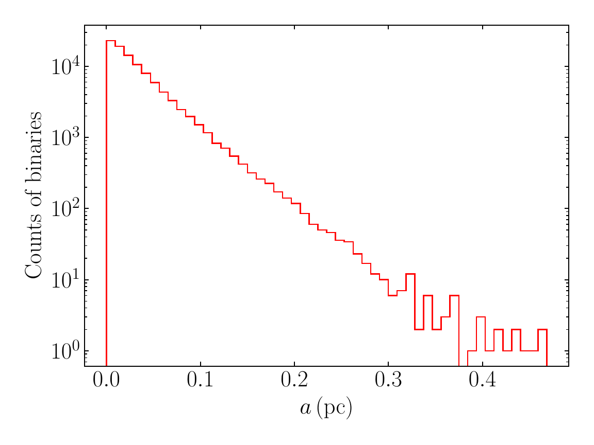

Appendix D 采样与 Fig. 19 复现问题
联合分布、采样顺序、直方图范围与数值网格的技术审查
导师汇报简版 · 2026-09-20
1 / 7
最初的数值差距
2174 AU严格联合截断分支
7287 AU论文正文报告值
7299 AU顺序复现分支，固定种子
- 红色阶梯频数总和恰好为 100000。
- 差距来自采样定义，而不是绘图或样本数。
- 论文文字采用先采样 j、再采样 a 的顺序。

2 / 7
采样范围与直方图范围
允许的随机变量范围
10-6 < a < 1 pc
这是 Appendix D 对样本的截断条件。
Fig. 19 的实际箱边界
8.6×10-6 < a < 0.4686 pc
这是有限样本的最小值和最大值，由矢量坐标反推。
Matplotlib 的 hist(a, bins=50) 默认用当前样本范围分箱。图只画到 0.4686 pc，并不表示采样器禁止更大的 a。
真实箱边界给出的箱中心均值约 7197 AU。论文的 7287 AU 来自未分箱原始样本，因此允许有小幅差异。
3 / 7
两种采样顺序回答不同问题
严格联合分支
P(a,j) = P(a) P(j | a)
- 对 j 积分得到 P(a)
- 逆 CDF 采样 a
- 按 P(j | a) 采样 j
数学上自洽，对应标准的边缘加条件采样。
论文文字顺序
P(a,j) = P(j) P(a | j)
- 先从 D2 采样 j
- 再按 P(a | j) 采样 a
D2 的尺度仍含 x/x̄，而此时 a 尚未确定。论文没有公开第一步所用的 x/x̄。
4 / 7
限制 0 < j < 1 的逆 CDF
Fraw(j | j₀) = 1 − [1 + (j/j₀)²]−1/2
- 生成 u，且 u 在 0 到 1 之间均匀分布。
- 令 T = u Fraw(1 | j₀)，只覆盖允许的原始 CDF 区间。
- 使用 j = j₀[(1−T)−2−1]1/2 得到样本。
这一步严格保证 0 < j < 1，但不能单独保证联合分布正确。联合正确性还依赖第一步使用的 j₀ 或真正的边缘 P(j)。
5 / 7
对数 a 网格的必要性
| 网格 | 归一化积分相对误差 | 样本均值相对误差 |
|---|
| 16384 点对数网格 | 1.19×10−7 | 3.56×10−7 |
| 16384 点线性网格 | 1.13×10−2 | −1.11×10−2 |
| 65536 点线性网格 | 1.73×10−3 | −1.72×10−3 |
线性网格的问题
16384 点线性步长约 6.1×10−5 pc，跳过大量小 a 结构。低分位数误差达到 13% 到 19%。
审查结论
保留对数网格。积分仍按真实 da 执行，没有把测度改成 d ln a。
6 / 7
当前代码边界与汇报结论
理论问题
- sample_initial_orbital_parameters 保留严格联合截断定义。
- 对数 a 网格继续保留。
论文复现问题
- sample_figure19_orbital_parameters 按论文文字顺序采样。
- 有效尺度来自原始矢量图，不能当作新的理论常数。
结论：原严格程序没有数值网格错误，但它与作者未完整公开的 Fig. 19 采样实现不是同一个概率模型。现在两个分支已明确分开。
复现结果：固定种子均值 7298.88 AU；五个独立种子的均值平均 7290.92 AU，论文报告 7287 AU。
7 / 7